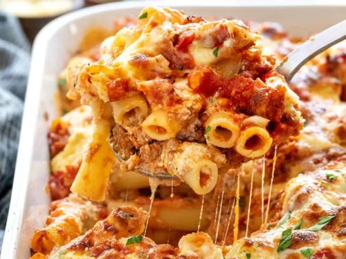

Baked Ziti Recipe

Description
Yummy baked ziti pasta dish. This recipe serves 12.
- Prep: 30 mins
- Cook: 1 hour
- Time: 1 hour 30 mins
- Serving Size: 12
Ingredients
1 pound dry ziti pasta
1 1/2 tablespoons olive oil
1 onion, sliced
1 teaspoon minced fresh rosemary
4 cloves garlic, chopped
½ pound ground beef
½ pound ground pork sausage
1 1/2 (26 ounce) jars spaghetti sauce
salt to taste
1 (6 ounce) package provolone cheese, sliced
3/4 cup sour cream
3/4 cup cottage cheese
1 (6 ounce) package mozzarella cheese, shredded
2 tablespoons freshly grated Parmesan cheese
Directions
- Bring a large pot of lightly salted water to a boil. Cook pasta in boiling water for 8 to 10 minutes, or until al dente; drain.
- Meanwhile, heat olive oil in large, heavy skillet over medium heat. Cook onion in oil until tender. Stir in rosemary and garlic. Transfer to a small bowl.
- Place ground beef and sausage in the skillet. Cook over medium-high heat until evenly brown. Stir in the onion mixture and the spaghetti sauce. Season with salt. Reduce heat to low, and simmer for 10 minutes.
- Preheat oven to 350 degrees F (175 degrees C). Grease a 9x13 inch baking dish. In the prepared dish, layer 1/2 of the cooked pasta, provolone cheese, sour cream, cottage cheese, and a little less than 1/2 of the meat mixture. Then layer the rest of the pasta, mozzarella cheese, remaining meat mixture, and Parmesan cheese.
- Bake in the preheated oven for 20 to 30 minutes, or until heated through and cheeses are melted.
- Let cool and enjoy